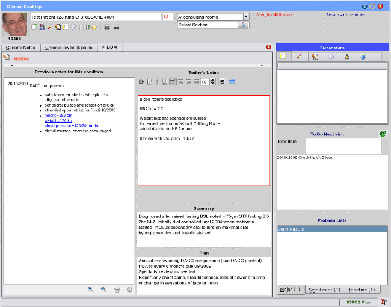

Entering Notes
By double clicking on the health issue you wish to add notes to, a new tab is created in the main workspace, titled
after the health issue itself, in this case diabetes. Each tab hence represents a unique health issue, except of course
for the general notes tab.

Existing notes are displayed to the left of the progress notes editor. Note also that the
historical summary and the
management plan summary for the condition are displayed under the progress notes editor.